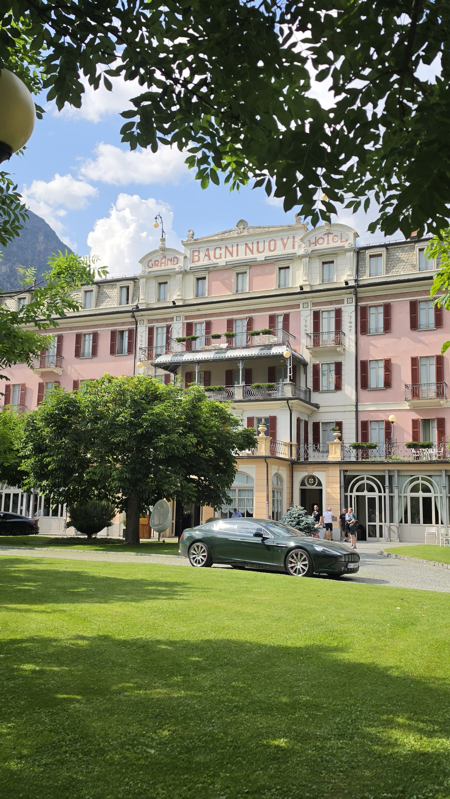

Elke reis is een missie.
Een besloten huis voor chauffeursdiensten, toegang en samengestelde reizen. Wij nemen een klein aantal opdrachten tegelijk aan, briefen elk daarvan persoonlijk, en zetten er onze naam onder.
Wij verkopen geen ritten. Wij nemen missies aan — en geen twee worden op dezelfde manier geschreven.
Besturen, delegaties, families en particuliere verzamelaars komen bij ons wanneer het vervoer zelf stil, exact en onopvallend moet zijn. Alles begint met een gesprek en eindigt met één persoon die ervoor instaat.
Vier missies
I — IVDe Chauffeur
Een gereedgemaakte auto en een toegewezen chauffeur — of uw eigen auto, gereden met dezelfde discipline. Transfers, roadshows, meerdaagse opdrachten.
Lees de missie II
II
De Concierge
Accommodatie, reserveringen, toegang en de verzoeken die in geen enkele categorie passen. Behandeld door de mensen die uw agenda al kennen.
Lees de missieDe Reis
Meerdaagse autoreizen door Europa, persoonlijk gereden voordat u ze ooit ziet. Route, huizen en ondersteuning rond één gezelschap geregeld.
Lees de missie
IVDe Retainer
Een doorlopende afspraak. Dezelfde chauffeur, dezelfde auto, beschikbaar gehouden voor uw agenda, een seizoen of een jaar lang.
Lees de missie
Tweemaal verkend voordat de opdrachtgever vertrok.
Vier stappen, één handtekening
Geen boekingssysteem en geen callcenter. Elke afspraak wordt geschreven door de persoon die ervoor instaat.
Het gesprek
Data, gezelschap, gevoeligheden. Tien minuten aan de telefoon zegt ons meer dan welk formulier ook.
Het schriftelijke voorstel
Auto, chauffeur, tijden en kosten in één document. Aangepast tot het klopt.
De voorbereiding
Auto's de avond ervoor gepresenteerd. Routes verkend. Achtervang in reserve, ongenoemd.
De dag zelf
Eén nummer om te bellen, beantwoord door iemand die uw naam en de opdracht kent.
Namen, routes en verzoeken blijven binnen het huis. Dat is altijd zo geweest.
Een beperkt aantal missies tegelijk, zodat geen daarvan iemands tweede prioriteit is.
Een gereedgemaakte auto uit het wagenpark, of uw eigen auto gereden volgens dezelfde maatstaf.